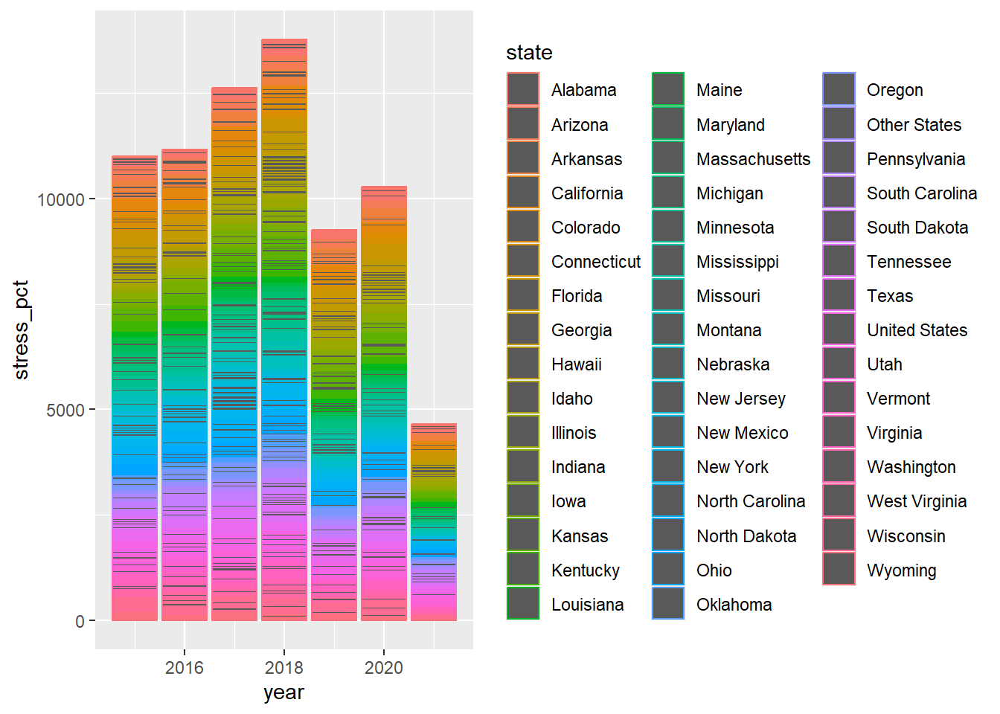
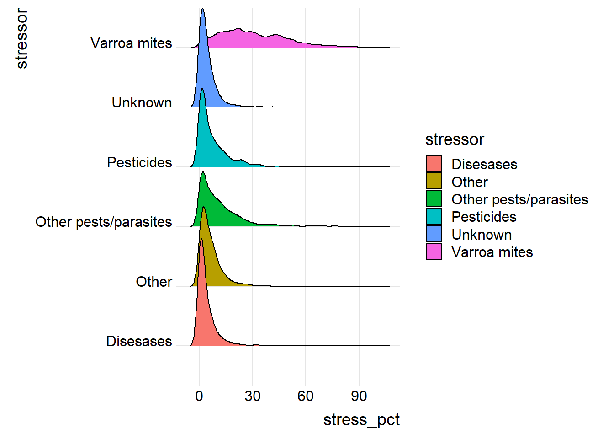
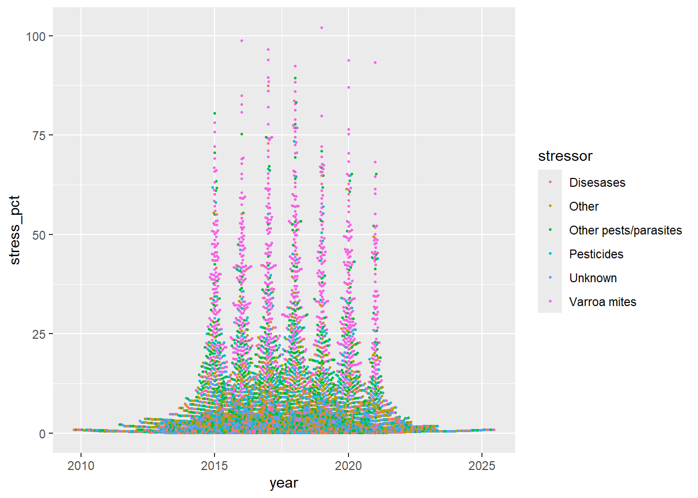
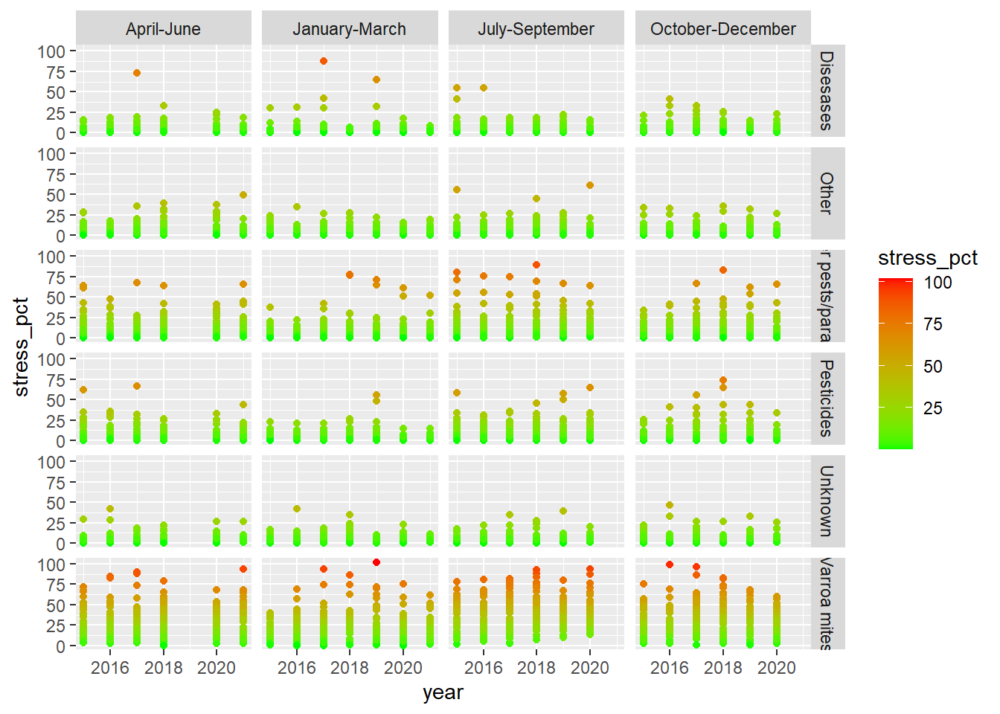

#Open library
library(tidytuesdayR)## Warning: pacote 'tidytuesdayR' foi compilado no R versão 4.4.3library(tidyverse)## ── Attaching core tidyverse packages ──────────────────────── tidyverse 2.0.0 ──
## ✔ dplyr 1.1.4 ✔ readr 2.1.5
## ✔ forcats 1.0.0 ✔ stringr 1.5.1
## ✔ ggplot2 3.5.1 ✔ tibble 3.2.1
## ✔ lubridate 1.9.4 ✔ tidyr 1.3.1
## ✔ purrr 1.0.2
## ── Conflicts ────────────────────────────────────────── tidyverse_conflicts() ──
## ✖ dplyr::filter() masks stats::filter()
## ✖ dplyr::lag() masks stats::lag()
## ℹ Use the conflicted package (<http://conflicted.r-lib.org/>) to force all conflicts to become errorslibrary(ggplot2)
library(ggthemes)## Warning: pacote 'ggthemes' foi compilado no R versão 4.4.3library(patchwork)
library(ggbeeswarm) ## Warning: pacote 'ggbeeswarm' foi compilado no R versão 4.4.3library(ggridges)## Warning: pacote 'ggridges' foi compilado no R versão 4.4.3library(waffle)## Warning: pacote 'waffle' foi compilado no R versão 4.4.3#Open dataset
colony <- readr::read_csv('https://raw.githubusercontent.com/rfordatascience/tidytuesday/main/data/2022/2022-01-11/colony.csv')## Rows: 1222 Columns: 10
## ── Column specification ────────────────────────────────────────────────────────
## Delimiter: ","
## chr (2): months, state
## dbl (8): year, colony_n, colony_max, colony_lost, colony_lost_pct, colony_ad...
##
## ℹ Use `spec()` to retrieve the full column specification for this data.
## ℹ Specify the column types or set `show_col_types = FALSE` to quiet this message.stressor <- readr::read_csv('https://raw.githubusercontent.com/rfordatascience/tidytuesday/main/data/2022/2022-01-11/stressor.csv')## Rows: 7332 Columns: 5
## ── Column specification ────────────────────────────────────────────────────────
## Delimiter: ","
## chr (3): months, state, stressor
## dbl (2): year, stress_pct
##
## ℹ Use `spec()` to retrieve the full column specification for this data.
## ℹ Specify the column types or set `show_col_types = FALSE` to quiet this message.Graph1 <- ggplot(data=stressor) +
aes(x=year,y=stress_pct,color=state) +
geom_col()
print(Graph1)## Warning: Removed 843 rows containing missing values or values outside the scale range
## (`geom_col()`).
Graph2 <- ggplot(data=stressor) +
aes(x=stress_pct,y=stressor,fill=stressor) +
ggridges::geom_density_ridges() +
ggridges::theme_ridges()
print(Graph2)## Picking joint bandwidth of 1.76## Warning: Removed 843 rows containing non-finite outside the scale range
## (`stat_density_ridges()`).
Graph3 <- ggplot(data=stressor) +
aes(x=year,y=stress_pct,color=stressor) +
geom_beeswarm(size=0.5)
print(Graph3)## Warning: Removed 843 rows containing missing values or values outside the scale range
## (`geom_point()`).
Graph <- ggplot(data=stressor) +
aes(x=year,y=stress_pct,color=stress_pct) +
geom_point()
Graph4<- Graph + facet_grid(stressor~months)
Graph4+ scale_color_gradient(low="green", high="red")## Warning: Removed 843 rows containing missing values or values outside the scale range
## (`geom_point()`).